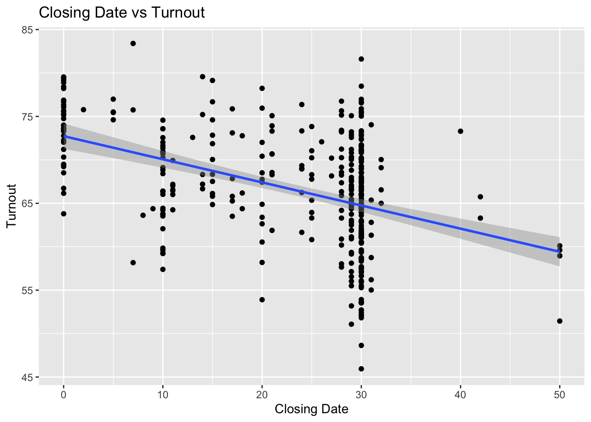
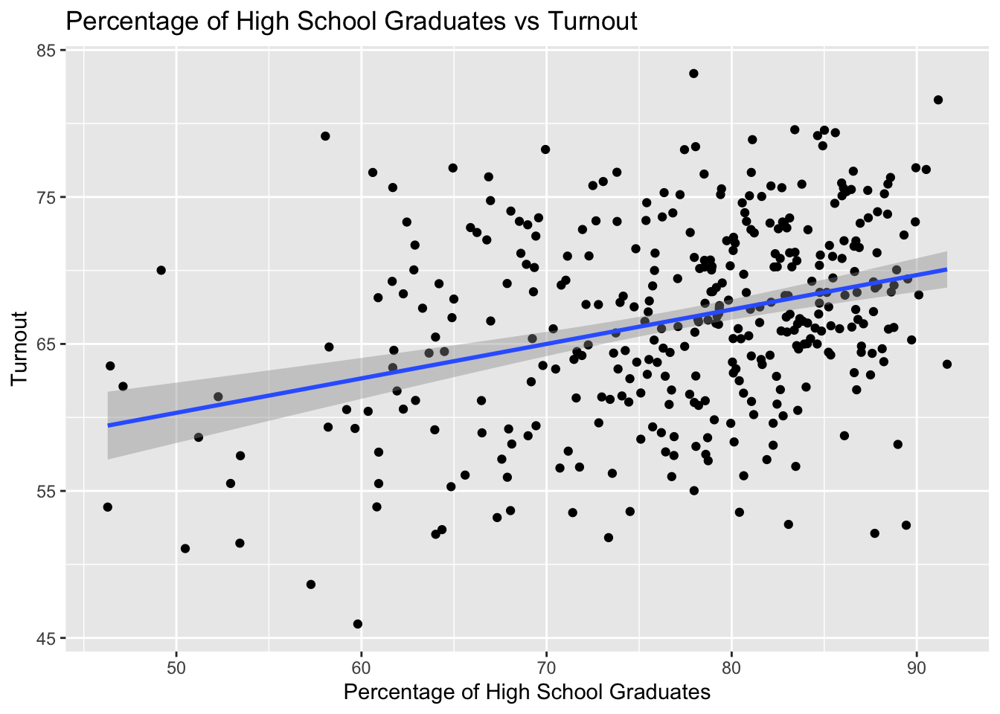
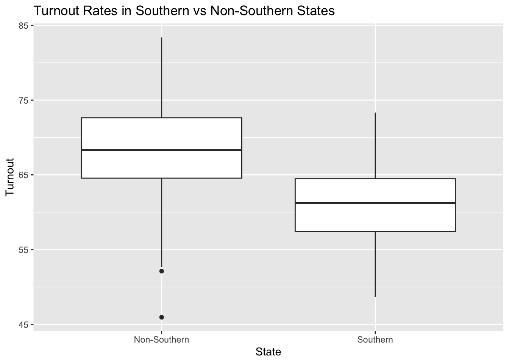

library(haven) # for loading .dta files
library(ggplot2) # for data visualization
library(car) # for regression diagnosticsLoading required package: carDatadata <- read_dta("aggcpsgvpt722.dta")Nat Hill
04/04/2024
Our study, which attempts to evaluate the effects that the percentage of high school graduates (ptcthsg), the closing date of registration (close), and whether or not a state is located in the (South) has on overall voter turnout (vote), yields strong support for our proposed hypotheses in addition to providing valuable insights into how voter turnout increases or decreases in US Elections. The model(s)1 is as follows:
\(Vote=β0+β1×Close+ϵ\)
\(Vote=β0+β1×South+ϵ\)
\(Vote=β0+β1×PctHSG+ϵ\)
\(Vote=β0+β1×Close+β2×PctHSG+β3×South+ϵ\)
Using bivariate linear regression (See Tables 1, 2 and 3) our results over indicate that the three chosen variables each have a significant association with the potential voter turnout. Holding all else constant and provided there are no confounding factors, the percentage of high school students in a given state has a positive relationship with voter turnout, supporting our initial hypothesis. On average, for every 1% increase in the number of high school graduates, there is estimated to be an approximate .24 increase in voter turnout. However, while these results indicate a strong statistical significance as the p-value associated with the coefficient is less than .001 this does not necessarily indicate a direct causal relationship between the amount of high school graduation in a state and the amount of voter turnout.
Likewise, our results also support our hypothesis that the average closing date has a negative relationship with voter turnout. On average and holding all else constant, the data suggests that for every day closer to the election that voter registration closes, we can expect the voter turnout to decrease by approximately .267. Moreover, the p-value of 2.2e-15 indicates a strong statistical significance in our model, however, as with the results from the ptcthsg model we cannot assume that the date of regression has a direct causation on negative voter turnout.
Furthermore, our analysis indicates that being a state located in the South is associated with lower voter turnout compared to non-southern states. On average and holding all else constant, a southern state can predict to have an approximate decrease of -7.11 in voter turnout. More broadly, our results suggest an average voter turnout of 68.18% in non-southern states compared to an average voter turnout of 61.07% in southern states, on the whole showing a lower turnout in the south compared to the rest of the nation.
Our multivariate regression model (see Table 4) likewise supports the findings of our original theory and shows a statistical and substantive relationship between the predictor variables and voter turnout. The close and ptcthsg variables once again show a positive and negative relationship with voter turnout, respectively, and southern states still possess on average a lower voter turnout. Both the close and south coefficients decreased from the initial bivariate model, and while both are still significant at the .001 level, the decrease could indicate an effect when accounting for the other variables in the model.
Therefore we can imply that an early closing date registration and location in the south are associated with a lower turnout percentage, holding all else constant. These findings could potentially have profound implications for policymakers, as targeted campaigns to increase voter turnout could focus their efforts more intently on southern states as well as make an effort to implement closer registration dates to elections across the country. It is also important to account for the magnitude and scale of these findings, for example, while the .21% decrease in voter turnout for every increase in voter turnout percentage might seem small, it could potentially accumulate across a large population and have a major impact in an election.
The pcthsg variable did see a significant change when accounting for the other variables, as the coefficient decreased from .234 in the bivariate regression to .08 as well as having the significance level decrease ( to p = .0252), while the multivariate results still indicate a positive relationship between, the inclusion of other variables could be effecting the impact its has on voter turnout.
library(haven) # for loading .dta files
library(ggplot2) # for data visualization
library(car) # for regression diagnosticsLoading required package: carDatadata <- read_dta("aggcpsgvpt722.dta")ggplot(data, aes(x=close, y=vote)) +
geom_point() +
geom_smooth(method="lm") +
labs(title="Closing Date vs Turnout", x="Closing Date", y="Turnout")`geom_smooth()` using formula = 'y ~ x'
model1 <- lm(vote ~ close, data = data)
summary(model1)
Call:
lm(formula = vote ~ close, data = data)
Residuals:
Min 1Q Median 3Q Max
-18.7962 -3.7026 0.3631 4.1130 16.8628
Coefficients:
Estimate Std. Error t value Pr(>|t|)
(Intercept) 72.72824 0.74002 98.279 <2e-16 ***
close -0.26620 0.02927 -9.094 <2e-16 ***
---
Signif. codes: 0 '***' 0.001 '**' 0.01 '*' 0.05 '.' 0.1 ' ' 1
Residual standard error: 5.987 on 355 degrees of freedom
Multiple R-squared: 0.1889, Adjusted R-squared: 0.1867
F-statistic: 82.7 on 1 and 355 DF, p-value: < 2.2e-16ggplot(data, aes(x=pcthsg, y=vote)) +
geom_point() +
geom_smooth(method="lm") +
labs(title="Percentage of High School Graduates vs Turnout", x="Percentage of High School Graduates", y="Turnout")`geom_smooth()` using formula = 'y ~ x'
model2 <- lm(vote ~ pcthsg, data = data)
summary(model2)
Call:
lm(formula = vote ~ pcthsg, data = data)
Residuals:
Min 1Q Median 3Q Max
-17.0398 -4.1328 -0.2189 4.6117 16.9383
Coefficients:
Estimate Std. Error t value Pr(>|t|)
(Intercept) 48.60058 2.84186 17.102 < 2e-16 ***
pcthsg 0.23428 0.03664 6.394 5.09e-10 ***
---
Signif. codes: 0 '***' 0.001 '**' 0.01 '*' 0.05 '.' 0.1 ' ' 1
Residual standard error: 6.296 on 355 degrees of freedom
Multiple R-squared: 0.1033, Adjusted R-squared: 0.1008
F-statistic: 40.89 on 1 and 355 DF, p-value: 5.087e-10ggplot(data, aes(x=factor(south), y=vote)) +
geom_boxplot() +
labs(title="Turnout Rates in Southern vs Non-Southern States", x="State", y="Turnout") +
scale_x_discrete(labels=c("Non-Southern", "Southern"))
model3 <- lm(vote ~ south, data = data)
summary(model3)
Call:
lm(formula = vote ~ south, data = data)
Residuals:
Min 1Q Median 3Q Max
-22.2349 -3.6293 0.1373 4.3761 15.2183
Coefficients:
Estimate Std. Error t value Pr(>|t|)
(Intercept) 68.1809 0.3565 191.239 <2e-16 ***
south -7.1134 0.7677 -9.266 <2e-16 ***
---
Signif. codes: 0 '***' 0.001 '**' 0.01 '*' 0.05 '.' 0.1 ' ' 1
Residual standard error: 5.966 on 355 degrees of freedom
Multiple R-squared: 0.1948, Adjusted R-squared: 0.1925
F-statistic: 85.86 on 1 and 355 DF, p-value: < 2.2e-16model <- lm(vote ~ close + pcthsg + south, data=data)
summary(model)
Call:
lm(formula = vote ~ close + pcthsg + south, data = data)
Residuals:
Min 1Q Median 3Q Max
-18.9845 -3.6174 0.1271 3.6121 14.1879
Coefficients:
Estimate Std. Error t value Pr(>|t|)
(Intercept) 66.41158 2.97056 22.357 < 2e-16 ***
close -0.20743 0.02783 -7.452 7.13e-13 ***
pcthsg 0.07929 0.03528 2.247 0.0252 *
south -5.25623 0.77398 -6.791 4.73e-11 ***
---
Signif. codes: 0 '***' 0.001 '**' 0.01 '*' 0.05 '.' 0.1 ' ' 1
Residual standard error: 5.473 on 353 degrees of freedom
Multiple R-squared: 0.3261, Adjusted R-squared: 0.3204
F-statistic: 56.94 on 3 and 353 DF, p-value: < 2.2e-16library(sandwich)
library(lmtest)Loading required package: zoo
Attaching package: 'zoo'The following objects are masked from 'package:base':
as.Date, as.Date.numericmodel <- lm(vote ~ close + pcthsg + south, data=data)
robust_se <- sqrt(diag(vcovHC(model)))
print(robust_se)(Intercept) close pcthsg south
3.34662888 0.02508362 0.04049877 0.78317140 summary_robust <- coeftest(model, vcov = vcovHC(model, type = "HC1"))
print(summary_robust)
t test of coefficients:
Estimate Std. Error t value Pr(>|t|)
(Intercept) 66.411582 3.303048 20.1062 < 2.2e-16 ***
close -0.207429 0.024890 -8.3339 1.762e-15 ***
pcthsg 0.079293 0.039980 1.9833 0.04811 *
south -5.256233 0.775157 -6.7809 5.039e-11 ***
---
Signif. codes: 0 '***' 0.001 '**' 0.01 '*' 0.05 '.' 0.1 ' ' 1In this case, the robust standard errors do not seem to significantly change the standard errors of the original model we have used in this study. Therefore, the statistical significance of the variables does not change, and the conclusions of our analysis should remain the same. See Table 5 in the appendix for more specific details.↩︎